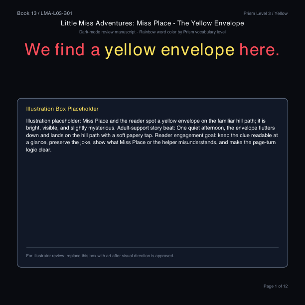
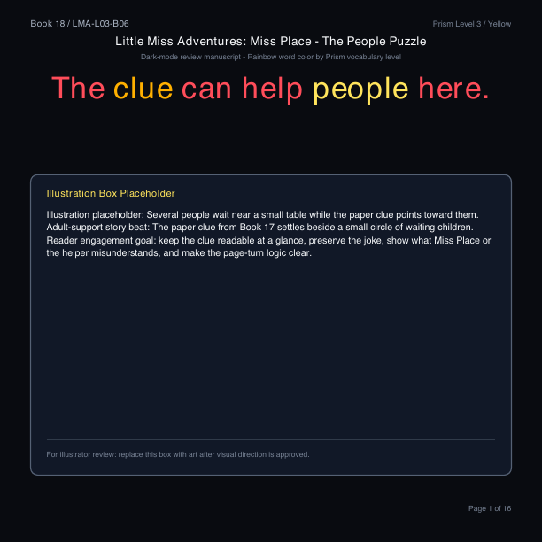
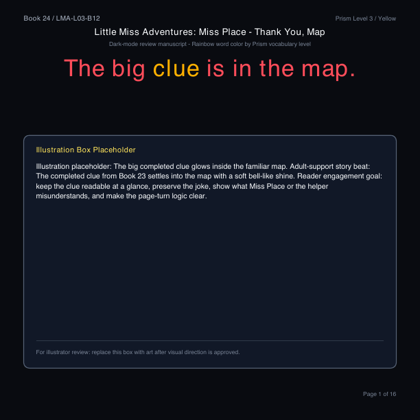

Foundation
Levels 1-3
High-frequency language, concrete action, supported inferenceA reading system built for story
Vocabulary, grammar, and story grow together, book by book, so readers can keep moving forward without leaving the characters they love behind.
Development preview · 12-book Level 3 series



The learning architecture
Prism keeps the product line coherent while each story stays playful. Every level coordinates vocabulary, sentence complexity, grammar, morphology, comprehension, and evidence.
Levels 1-3
High-frequency language, concrete action, supported inferenceLevels 4-6
Longer syntax, richer morphology, independent comprehensionLevels 7-9
Academic language, emotional nuance, domain vocabularyLevels 10-13
Argument, rhetoric, research, literary and disciplinary readingLittle Miss Adventures
Books 13-24 move from noticing clues to sequencing, comparing, timing, questioning, choosing, and finally synthesizing what the clues mean.
Inside every book
The child sees a clean story page. Behind it, Prism tracks what is new, what has already been learned, what is coming next, and how the text demonstrates its reading goals.
We thank you for the map and path.
Transparent by design
Prism can report how a book relates to Common Core skills, Dolch and Fry coverage, morphology targets, and planning references for Lexile, DRA, and Guided Reading. These are transparent crosswalks, not claims of outside certification.